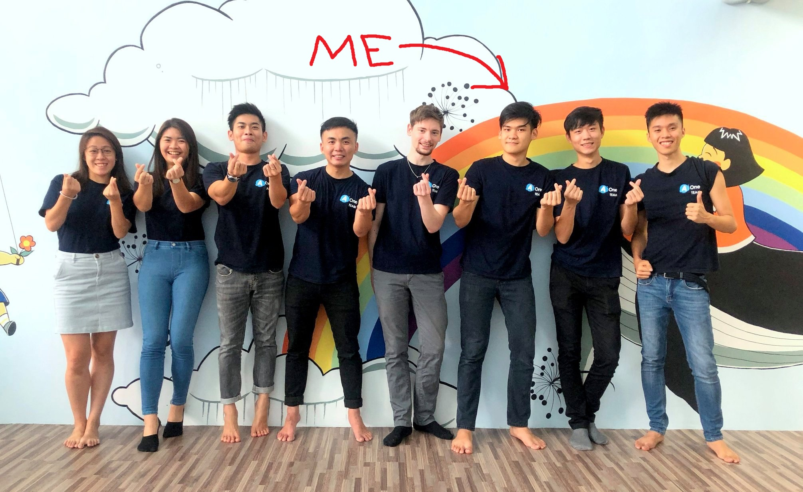
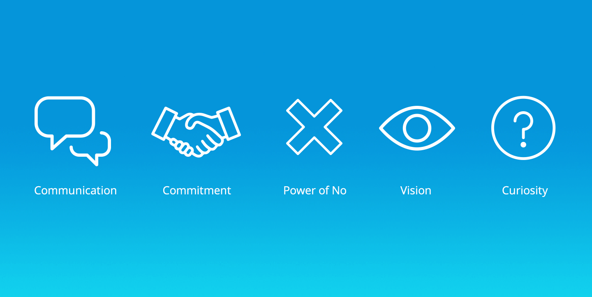
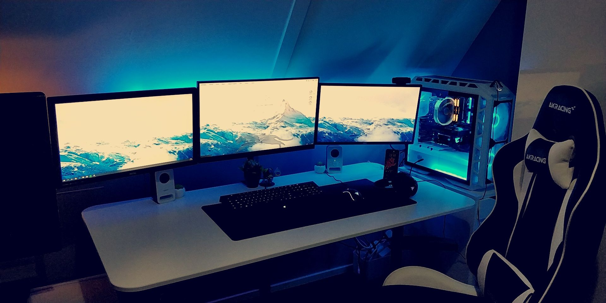

Intro

Greetings, I am a Software Engineer whom just graduated from Taylor's University, currently I am working in My Aone as a front-end developer in UI/UX. Not only that, but due to my skills and certification as a Scrum Master, I am also acting as the current Product Manager.
The journey wasn't easy I assure you, but what kept me going has always been my end goal in becoming an aspiring leader at the same time, keeping my hobby as a programmer alive. I always tell me self in the end 5 YEARS 5 FIGURES. If any of you are intrested, my current skills include Vue.Js and Laravel as well as the basic web development knowledge (PHP, JS, CSS, HTML).
Skills

Well adapt to presentations, communicating with clients and conversing with fellow colleagues. Commited towards favourable companies with similar goals and mindset. Experience with planning ahead datelines, and skilled at filtering client requests if necessary. As the current project manager of AoneSchools, I also skill in determining road maps and future planning for the product.
Technical wise, I am skilled in web development tools such as HTML, CSS, JavaScript. I am also familiar with modern day frameworks such as Vue.js and Laravel. I boast skilles in SQL and NoSQL as well as other form of database management. Lastly would be my basic skills in Java, C++ and Python.
Projects
During my free time in the past, I worked on an indexing system for one of my all time favourite game, King's Raid. Somewhere of the mid 2018, was the first iteration of my indexing system for the game, but was soon takes down after a year due to lack of maintainence and compatibility issues with mobile view. Yet, I often find my self as a contributer in Wikipedias on the game King's Raid.

PC building is one of my main project which acts as my side income, it consists of fixing older system and/or upgrading them as well as building state of the art gaming machines capable of running the most demanding Triple-A games today. With tiny margin of profit ranging from 1-5% for PC building I find it less of a source of revenue, rather a hobby that I favor.
Contact
+60 - 147355823
jonathanfoong1997@gmail.com